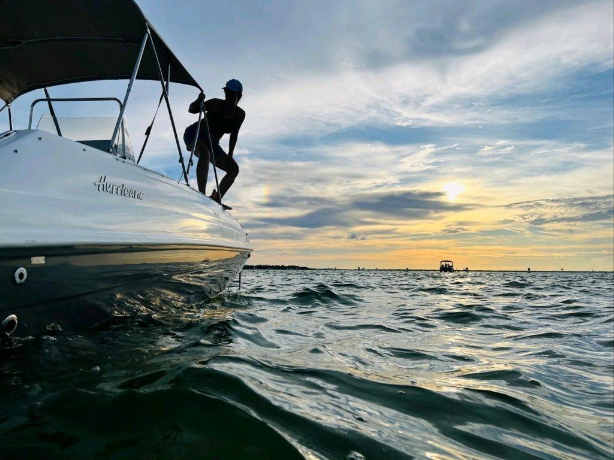
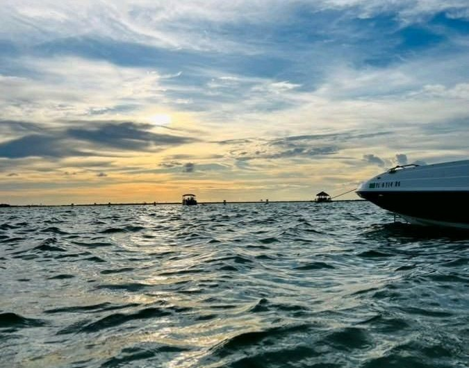
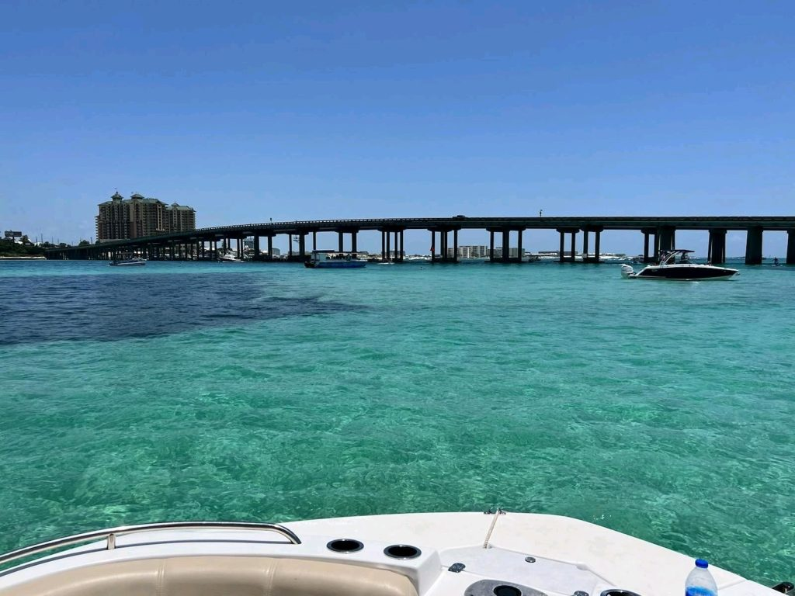
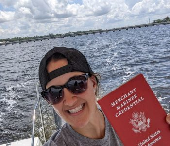

Photo Gallery












Discover the beauty of the North Florida waterways with our customized boat tours.
Welcome to Mermaid Boat Tours JAX, your premier destination for unforgettable boat charters in Jacksonville, Florida. Whether you're looking for a relaxing sunset cruise, an ecotour observing natural wildlife, or a private charter for special occasions, we have the perfect vessel and experienced captain to serve your crew throughout their adventure together.
Our single vessel operation delivers spacious seating, canvas sunshade and private porta potty onboard. We prioritize safety, comfort, and exceptional service to ensure every trip is enjoyable.




Give Captain Erin a call/text or connect on LinkedIn to coordinate your memorable experience.
Also offering charter service in Steinhatchee for Scalloping Season.